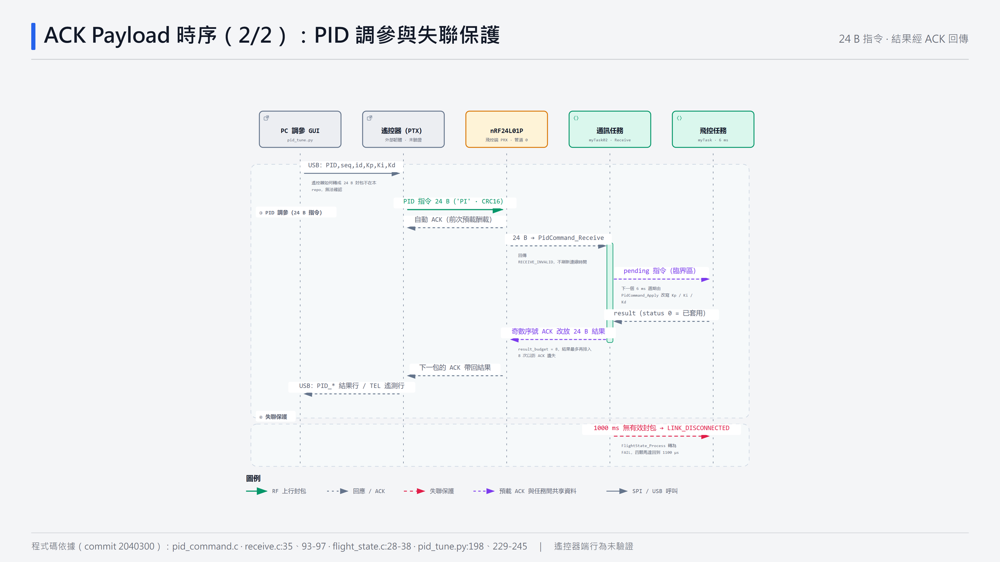

無線通訊與失聯保護
飛控端的 nRF24L01P 一直處於接收（PRX）模式。遙控器送來的每一包控制封包，硬體都會自動回 ACK，並夾帶飛控事先排入的資料——遙測或調參結果就這樣「搭便車」回到遙控器，不需要切換收發方向。
本頁重點
- 三種格式：17 B 控制封包（上行）、24 B PID / 軸切換指令（上行）、4 / 24 / 31 B ACK Payload（下行）。
- ACK 內容是「上一輪」預先排入的，所以回傳資料一律落後一包；調參結果需要後續封包帶回。
- 只有通過幀頭與校驗和的控制封包會刷新連線時間；超過 1000 ms 即判定失聯 → FAIL → 停機。
5.1鏈路總覽
5.2封包格式（皆為大端序）
控制封包 · 17 B（遙控器 → 飛控）
搖桿值 0–1000；校驗和為 byte 0–12 的 32 位元累加。power 只在等於 1 時鎖存成事件，由飛控任務讀取後清除。
PID / 軸切換指令 · 24 B（遙控器 → 飛控；結果以同格式回傳）
類型 1 = PID SET、2 = PID 結果、3 = 軸切換、4 = 軸切換結果；ID 0–5 對應 roll / pitch / gyro_x / gyro_y / gyro_z / yaw，軸切換 ID 為 128 + axis。CRC16-CCITT（初值 0xFFFF）。傳輸上限 Kp ≤ 20、Ki ≤ 10、Kd ≤ 2（不代表穩定範圍）。
遙測 ACK Payload · 31 B（飛控 → 遙控器）
角度、角速度依所選軸（X / Y / Z，預設 X）；四路 PWM 永遠是實際寫入的脈寬。數值超出 int16 會限幅、小數截斷。
docs/ack_telemetry.md 描述的是舊版 10 B 格式，已被上面的 31 B 取代，以程式碼為準。
5.3ACK Payload 機制
- 預載：
Receive_Init()在拉高 CE 開始接收之前，先排入一筆 ACK（4 B 序號），第一個控制封包才帶得回資料 。 - 硬體自動回覆：收到封包時，晶片立即送出 ACK 與 TX FIFO 中排在最前面的酬載——這是先前排入的內容。
- 補入下一筆：通訊任務輪詢到這包後，馬上呼叫
Receive_QueueAckTelemetry()排入下一筆（即使應用層校驗失敗，因為硬體已經消耗了一筆 ACK）。 - 內容選擇：還沒有遙測時送 4 B 序號；有遙測快照時送 31 B；序號為奇數且有待回報結果時改送 24 B PID 結果 。
- TX FIFO 滿（3 筆）時不寫入、也不清空，保留晶片重送所需的內容。
5.4通訊時序圖


開啟完整互動時序圖（可點選參與者查看程式碼依據）。
5.5序號與可靠性設計
| 序號 | 誰遞增 | 用途 |
|---|---|---|
ack_sequence | 每成功排入一筆 ACK +1 | 4 B 回覆內容；奇偶決定是否插入調參結果 |
遙測 sequence | 飛控每輪擷取 +1（每 6 ms） | 電腦端排序、偵測重複與缺口 |
指令 sequence | 電腦端隨機產生 | 去重：同序號重送不會再套用或清除積分，只重新安排結果回覆 |
- 結果重送：結果最多排入 8 次（
result_budget），與遙測交錯，抵抗 ACK 遺失。 - 指令不刷新連線：24 B 指令回傳
RECEIVE_INVALID，所以只送調參指令不能維持連線 。 - 實測 遙測 CSV 中序號覆蓋率 84–100%、重複 0–8%：因為遙測只在有 ACK 時送出「最新」快照，缺口代表兩次 ACK 之間飛控已更新多筆，不能直接當作丟包率（見實驗 · 資料品質）。
5.6失聯保護與飛行狀態機
失聯判定
通訊任務每 6 ms 呼叫 FlightState_Update()：now − last_rx_time > 1000 ms 即設為 LINK_DISCONNECTED；飛控任務下一輪轉為 FAIL 並停機。
推算 最後一包有效封包後約 1.00–1.01 s 停機（1000 ms + 最多一個通訊週期 + 一個飛控週期）。
程式審閱觀察
- FIX_HEIGHT 分支中「失聯 → FAIL」之後的
fixheight == 0 → NORMAL沒有else，兩者同週期成立時會先回 NORMAL、下一週期才進 FAIL（延遲 6 ms，影響很小）。 - 失聯後
remoteData保留最後的搖桿值；恢復連線即以新值繼續，無油門歸零確認。
5.7空中時間估算
推算 依 nRF24L01+ Enhanced ShockBurst 封包結構（前導 1 B + 位址 5 B + 控制欄 9 bit + 酬載 + CRC 2 B）在 2 Mbps 下計算：
| 封包 | 位元數 | 空中時間 |
|---|---|---|
| 17 B 控制封包 | 209 bit | ≈ 105 µs |
| 24 B PID 指令 | 265 bit | ≈ 133 µs |
| ACK + 31 B 遙測 | 321 bit | ≈ 161 µs |
再加上收發切換約 130 µs，31 B ACK 的完整往返超過 250 µs；這就是 docs/telemetry.md 記錄必須把重送延遲 ARD 從 250 µs 改成 500 µs 的原因 。